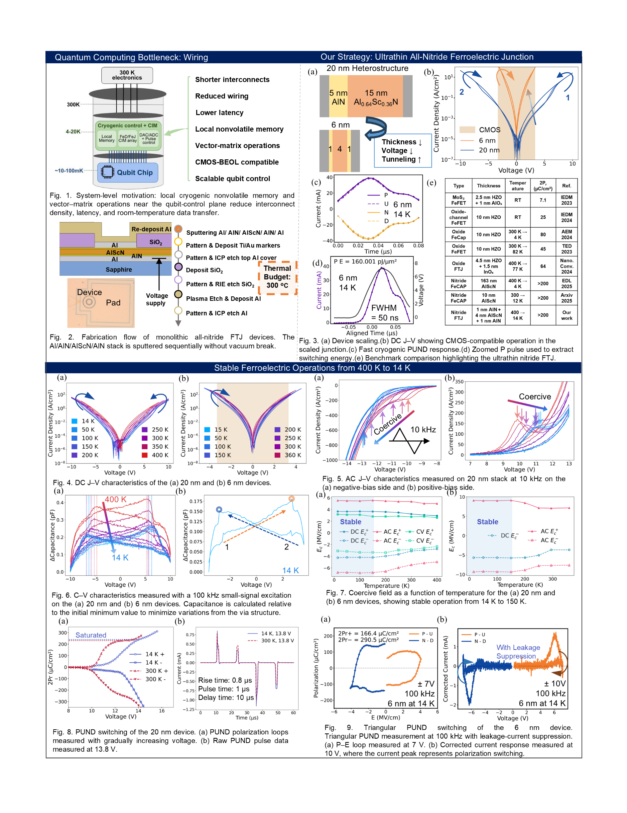
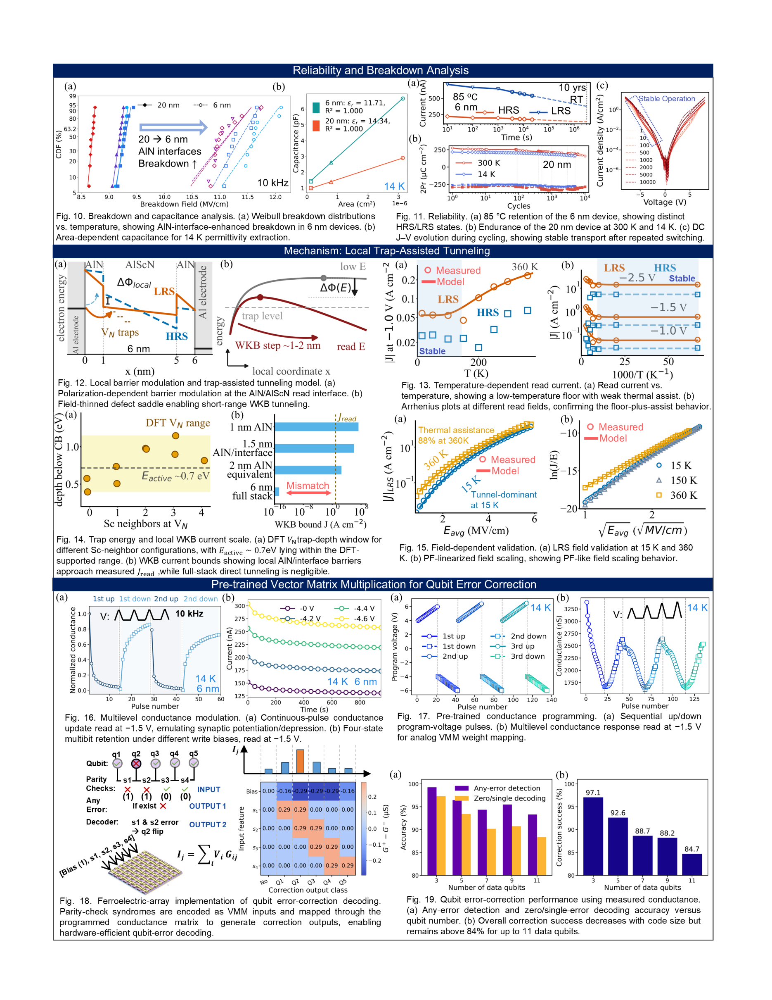

Research · Cryogenic Memory · Device Physics
AlScN Ferroelectric Junctions
Contributor work on scaled AlN/AlScN/AlN ferroelectric junction measurements. The manuscript reports hysteretic switching from 400 K to 14 K and ON/OFF ratio above 2 across the measured range.

Overview
Aluminum scandium nitride (AlScN) is a wurtzite nitride ferroelectric with strong polarization, thermal stability, and sputter-based BEOL compatibility. This project studies monolithic all-nitride Al / AlN / AlScN / AlN / Al junctions built around a 1 nm AlN / 4 nm AlScN / 1 nm AlN active stack. The manuscript evaluates whether a 6 nm heterostructure can preserve ferroelectric switching and nonvolatile resistance readout from elevated temperature down to cryogenic operation.
My Contribution
- Collected and organized temperature-dependent electrical characterization data.
- Operated cryogenic and high-temperature probe stations for device measurements.
- Ran DC/AC J-V, C-V, PUND, breakdown, and endurance measurements used in the analysis.
- Analyzed switching, hysteresis, breakdown, capacitance, polarization, endurance, ON/OFF ratio, and read-current trends across temperature.
- Developed Python scripts for data processing, visualization, parameter extraction, and device-to-device comparison.
- Created device visualization assets, including cross-section and 8x8 array views.
Key Findings
The paper demonstrates cryogenic ferroelectric operation in an ultrathin all-nitride 1 nm AlN / 4 nm AlScN / 1 nm AlN junction. The 6 nm device preserves hysteretic switching from 400 K to 14 K, maintains an ON/OFF ratio above 2 across the measured temperature range, reaches approximately 5.4 MV/cm coercive field at 14 K, and shows breakdown near 11.5 MV/cm under 10 kHz operation. Temperature- and field-dependent transport support a tunnel-dominant local trap-assisted readout mechanism rather than full-stack direct tunneling or classical Poole-Frenkel emission alone.
Compute-in-Memory Relevance
In addition to binary memory behavior, the manuscript uses measured conductance states as programmable analog weights for vector-matrix multiplication. Multilevel conductance programming enabled a measured-device-based repetition-code syndrome decoder for qubit-error detection and decoding. This result suggests that scaled all-nitride ferroelectric junctions could support cryogenic memory and local compute near quantum-control hardware.
Gallery


Paper
IEDM 2026 manuscript draft
Ultrathin Monolithic All-Nitride Ferroelectric Junctions for Cryogenic Memory and Compute-in-Memory Applications
This manuscript demonstrates an ultrathin monolithic all-nitride ferroelectric junction based on a 1 nm AlN / 4 nm AlScN / 1 nm AlN active stack. The draft reports CMOS-voltage-compatible cryogenic operation from 400 K to 14 K, tunnel-dominant local trap-assisted resistance readout, stable retention and endurance, and multilevel conductance programming for measured-device-based vector-matrix multiplication in qubit-error detection and decoding.